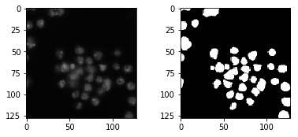
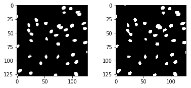
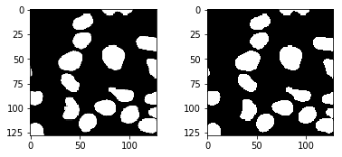

#@title Unet segmentation in Keras TensorFlow
#@markdown Video explanation:
from IPython.display import YouTubeVideo
YouTubeVideo('M3EZS__Z_XE', width=600, height=400)U-NET
Colab
Colab

UNET SEGMENTATION
Original article of Nikhil Tomar on GitHub.
Paper Arxiv Link: U-Net: Convolutional Networks for Biomedical Image Segmentation
- UNet is a fully convolutional network(FCN) that does image segmentation. Its goal is to predict each pixel’s class.
- UNet is built upon the FCN and modified in a way that it yields better segmentation in medical imaging.
1.1 Architecture

UNet Architecture has 3 parts:
- The Contracting/Downsampling Path
- Bottleneck
- The Expanding/Upsampling Path
Downsampling Path:
- It consists of two 3x3 convolutions (unpadded convolutions), each followed by a rectified linear unit (ReLU) and a 2x2 max pooling operation with stride 2 for downsampling.
- At each downsampling step we double the number of feature channels.
Upsampling Path:
- Every step in the expansive path consists of an upsampling of the feature map followed by a 2x2 convolution (“up-convolution”), a concatenation with the correspondingly feature map from the downsampling path, and two 3x3 convolutions, each followed by a ReLU.
Skip Connection:
The skip connection from the downsampling path are concatenated with feature map during upsampling path. These skip connection provide local information to global information while upsampling.
Final Layer:
At the final layer a 1x1 convolution is used to map each feature vector to the desired number of classes.
1.2 Advantages
Advantages:
- The UNet combines the location information from the downsampling path to finally obtain a general information combining localisation and context, which is necessary to predict a good segmentation map.
- No Dense layer is used, so image sizes can be used.
1.3 Dataset
Link: Data Science Bowl 2018 Find the nuclei in divergent images to advance medical discovery
# Get file data-science-bowl-2018/stage1_train.zip
# Download it from here: https://www.kaggle.com/c/8089/download-all
# And upload stage1_train.zip to the Google Colab
from google.colab import files
uploaded = files.upload()Saving stage1_train.zip to stage1_train.zip# Unzip it
!mkdir stage1_train # create directory
!unzip stage1_train.zip -d stage1_train # unzip into 'stage1_train' dir
!rm stage1_train.zip # delete 'stage1_train.zip' file1.4 Code
## Imports
import os
import sys
import random
import numpy as np
import cv2
import matplotlib.pyplot as plt
import tensorflow as tf
from tensorflow import keras
## Seeding
seed = 42
random.seed = seed
np.random.seed = seed
tf.seed = seedData Generator
class DataGen(keras.utils.Sequence):
def __init__(self, ids, path, batch_size=8, image_size=128):
self.ids = ids
self.path = path
self.batch_size = batch_size
self.image_size = image_size
self.on_epoch_end()
def __load__(self, id_name):
## Path
image_path = os.path.join(self.path, id_name, "images", id_name) + ".png"
mask_path = os.path.join(self.path, id_name, "masks/")
all_masks = os.listdir(mask_path)
## Reading Image
image = cv2.imread(image_path, 1)
image = cv2.resize(image, (self.image_size, self.image_size))
mask = np.zeros((self.image_size, self.image_size, 1))
## Reading Masks
for name in all_masks:
_mask_path = mask_path + name
_mask_image = cv2.imread(_mask_path, -1)
_mask_image = cv2.resize(_mask_image, (self.image_size, self.image_size)) #128x128
_mask_image = np.expand_dims(_mask_image, axis=-1)
mask = np.maximum(mask, _mask_image)
## Normalizing
image = image/255.0
mask = mask/255.0
return image, mask
def __getitem__(self, index):
if(index+1)*self.batch_size > len(self.ids):
self.batch_size = len(self.ids) - index*self.batch_size
files_batch = self.ids[index*self.batch_size : (index+1)*self.batch_size]
image = []
mask = []
for id_name in files_batch:
_img, _mask = self.__load__(id_name)
image.append(_img)
mask.append(_mask)
image = np.array(image)
mask = np.array(mask)
return image, mask
def on_epoch_end(self):
pass
def __len__(self):
return int(np.ceil(len(self.ids)/float(self.batch_size)))Hyperparameters
image_size = 128
train_path = "stage1_train/"
epochs = 10
batch_size = 8
## Training Ids
train_ids = next(os.walk(train_path))[1]
## Validation Data Size
val_data_size = 10
valid_ids = train_ids[:val_data_size]
train_ids = train_ids[val_data_size:]gen = DataGen(train_ids, train_path, batch_size=batch_size, image_size=image_size)
x, y = gen.__getitem__(0)
print(x.shape, y.shape)(8, 128, 128, 3) (8, 128, 128, 1)r = random.randint(0, len(x)-1)
fig = plt.figure()
fig.subplots_adjust(hspace=0.4, wspace=0.4)
ax = fig.add_subplot(1, 2, 1)
ax.imshow(x[r])
ax = fig.add_subplot(1, 2, 2)
ax.imshow(np.reshape(y[r], (image_size, image_size)), cmap="gray")
Different Convolutional Blocks
def down_block(x, filters, kernel_size=(3, 3), padding="same", strides=1):
c = keras.layers.Conv2D(filters, kernel_size, padding=padding, strides=strides, activation="relu")(x)
c = keras.layers.Conv2D(filters, kernel_size, padding=padding, strides=strides, activation="relu")(c)
p = keras.layers.MaxPool2D((2, 2), (2, 2))(c)
return c, p
def up_block(x, skip, filters, kernel_size=(3, 3), padding="same", strides=1):
us = keras.layers.UpSampling2D((2, 2))(x)
concat = keras.layers.Concatenate()([us, skip])
c = keras.layers.Conv2D(filters, kernel_size, padding=padding, strides=strides, activation="relu")(concat)
c = keras.layers.Conv2D(filters, kernel_size, padding=padding, strides=strides, activation="relu")(c)
return c
def bottleneck(x, filters, kernel_size=(3, 3), padding="same", strides=1):
c = keras.layers.Conv2D(filters, kernel_size, padding=padding, strides=strides, activation="relu")(x)
c = keras.layers.Conv2D(filters, kernel_size, padding=padding, strides=strides, activation="relu")(c)
return cUNet Model
def UNet():
f = [16, 32, 64, 128, 256]
inputs = keras.layers.Input((image_size, image_size, 3))
p0 = inputs
c1, p1 = down_block(p0, f[0]) # 128 --> 64
c2, p2 = down_block(p1, f[1]) # 64 --> 32
c3, p3 = down_block(p2, f[2]) # 32 --> 16
c4, p4 = down_block(p3, f[3]) # 16 --> 8
bn = bottleneck(p4, f[4])
u1 = up_block(bn, c4, f[3]) # 8 --> 16
u2 = up_block(u1, c3, f[2]) # 16 --> 32
u3 = up_block(u2, c2, f[1]) # 32 --> 64
u4 = up_block(u3, c1, f[0]) # 64 --> 128
outputs = keras.layers.Conv2D(1, (1, 1), padding="same", activation="sigmoid")(u4)
model = keras.models.Model(inputs, outputs)
return modelmodel = UNet()
model.compile(optimizer="adam", loss="binary_crossentropy", metrics=["acc"])
model.summary()WARNING:tensorflow:From /usr/local/lib/python3.6/dist-packages/tensorflow/python/ops/resource_variable_ops.py:435: colocate_with (from tensorflow.python.framework.ops) is deprecated and will be removed in a future version.
Instructions for updating:
Colocations handled automatically by placer.
__________________________________________________________________________________________________
Layer (type) Output Shape Param # Connected to
==================================================================================================
input_1 (InputLayer) (None, 128, 128, 3) 0
__________________________________________________________________________________________________
conv2d (Conv2D) (None, 128, 128, 16) 448 input_1[0][0]
__________________________________________________________________________________________________
conv2d_1 (Conv2D) (None, 128, 128, 16) 2320 conv2d[0][0]
__________________________________________________________________________________________________
max_pooling2d (MaxPooling2D) (None, 64, 64, 16) 0 conv2d_1[0][0]
__________________________________________________________________________________________________
conv2d_2 (Conv2D) (None, 64, 64, 32) 4640 max_pooling2d[0][0]
__________________________________________________________________________________________________
conv2d_3 (Conv2D) (None, 64, 64, 32) 9248 conv2d_2[0][0]
__________________________________________________________________________________________________
max_pooling2d_1 (MaxPooling2D) (None, 32, 32, 32) 0 conv2d_3[0][0]
__________________________________________________________________________________________________
conv2d_4 (Conv2D) (None, 32, 32, 64) 18496 max_pooling2d_1[0][0]
__________________________________________________________________________________________________
conv2d_5 (Conv2D) (None, 32, 32, 64) 36928 conv2d_4[0][0]
__________________________________________________________________________________________________
max_pooling2d_2 (MaxPooling2D) (None, 16, 16, 64) 0 conv2d_5[0][0]
__________________________________________________________________________________________________
conv2d_6 (Conv2D) (None, 16, 16, 128) 73856 max_pooling2d_2[0][0]
__________________________________________________________________________________________________
conv2d_7 (Conv2D) (None, 16, 16, 128) 147584 conv2d_6[0][0]
__________________________________________________________________________________________________
max_pooling2d_3 (MaxPooling2D) (None, 8, 8, 128) 0 conv2d_7[0][0]
__________________________________________________________________________________________________
conv2d_8 (Conv2D) (None, 8, 8, 256) 295168 max_pooling2d_3[0][0]
__________________________________________________________________________________________________
conv2d_9 (Conv2D) (None, 8, 8, 256) 590080 conv2d_8[0][0]
__________________________________________________________________________________________________
up_sampling2d (UpSampling2D) (None, 16, 16, 256) 0 conv2d_9[0][0]
__________________________________________________________________________________________________
concatenate (Concatenate) (None, 16, 16, 384) 0 up_sampling2d[0][0]
conv2d_7[0][0]
__________________________________________________________________________________________________
conv2d_10 (Conv2D) (None, 16, 16, 128) 442496 concatenate[0][0]
__________________________________________________________________________________________________
conv2d_11 (Conv2D) (None, 16, 16, 128) 147584 conv2d_10[0][0]
__________________________________________________________________________________________________
up_sampling2d_1 (UpSampling2D) (None, 32, 32, 128) 0 conv2d_11[0][0]
__________________________________________________________________________________________________
concatenate_1 (Concatenate) (None, 32, 32, 192) 0 up_sampling2d_1[0][0]
conv2d_5[0][0]
__________________________________________________________________________________________________
conv2d_12 (Conv2D) (None, 32, 32, 64) 110656 concatenate_1[0][0]
__________________________________________________________________________________________________
conv2d_13 (Conv2D) (None, 32, 32, 64) 36928 conv2d_12[0][0]
__________________________________________________________________________________________________
up_sampling2d_2 (UpSampling2D) (None, 64, 64, 64) 0 conv2d_13[0][0]
__________________________________________________________________________________________________
concatenate_2 (Concatenate) (None, 64, 64, 96) 0 up_sampling2d_2[0][0]
conv2d_3[0][0]
__________________________________________________________________________________________________
conv2d_14 (Conv2D) (None, 64, 64, 32) 27680 concatenate_2[0][0]
__________________________________________________________________________________________________
conv2d_15 (Conv2D) (None, 64, 64, 32) 9248 conv2d_14[0][0]
__________________________________________________________________________________________________
up_sampling2d_3 (UpSampling2D) (None, 128, 128, 32) 0 conv2d_15[0][0]
__________________________________________________________________________________________________
concatenate_3 (Concatenate) (None, 128, 128, 48) 0 up_sampling2d_3[0][0]
conv2d_1[0][0]
__________________________________________________________________________________________________
conv2d_16 (Conv2D) (None, 128, 128, 16) 6928 concatenate_3[0][0]
__________________________________________________________________________________________________
conv2d_17 (Conv2D) (None, 128, 128, 16) 2320 conv2d_16[0][0]
__________________________________________________________________________________________________
conv2d_18 (Conv2D) (None, 128, 128, 1) 17 conv2d_17[0][0]
==================================================================================================
Total params: 1,962,625
Trainable params: 1,962,625
Non-trainable params: 0
__________________________________________________________________________________________________Training the model
train_gen = DataGen(train_ids, train_path, image_size=image_size, batch_size=batch_size)
valid_gen = DataGen(valid_ids, train_path, image_size=image_size, batch_size=batch_size)
train_steps = len(train_ids)//batch_size
valid_steps = len(valid_ids)//batch_size
model.fit_generator(train_gen, validation_data=valid_gen, steps_per_epoch=train_steps,
validation_steps=valid_steps, epochs=epochs)WARNING:tensorflow:From /usr/local/lib/python3.6/dist-packages/tensorflow/python/ops/math_ops.py:3066: to_int32 (from tensorflow.python.ops.math_ops) is deprecated and will be removed in a future version.
Instructions for updating:
Use tf.cast instead.
Epoch 1/10
2/2 [==============================] - 1s 462ms/step - loss: 0.8926 - acc: 0.9346
83/83 [==============================] - 24s 291ms/step - loss: 2.6685 - acc: 0.8320 - val_loss: 0.8926 - val_acc: 0.9346
Epoch 2/10
5/5 [==============================] - 0s 76ms/step - loss: 0.2497 - acc: 0.9107
83/83 [==============================] - 14s 170ms/step - loss: 0.8620 - acc: 0.8629 - val_loss: 0.2497 - val_acc: 0.9107
Epoch 3/10
5/5 [==============================] - 0s 85ms/step - loss: 0.1496 - acc: 0.9668
83/83 [==============================] - 15s 177ms/step - loss: 0.6539 - acc: 0.9156 - val_loss: 0.1496 - val_acc: 0.9668
Epoch 4/10
5/5 [==============================] - 0s 79ms/step - loss: 0.1137 - acc: 0.9709
83/83 [==============================] - 15s 179ms/step - loss: 0.4919 - acc: 0.9382 - val_loss: 0.1137 - val_acc: 0.9709
Epoch 5/10
5/5 [==============================] - 0s 78ms/step - loss: 0.1407 - acc: 0.9667
83/83 [==============================] - 14s 172ms/step - loss: 0.5270 - acc: 0.9361 - val_loss: 0.1407 - val_acc: 0.9667
Epoch 6/10
5/5 [==============================] - 0s 83ms/step - loss: 0.1272 - acc: 0.9680
83/83 [==============================] - 14s 172ms/step - loss: 0.4950 - acc: 0.9378 - val_loss: 0.1272 - val_acc: 0.9680
Epoch 7/10
5/5 [==============================] - 0s 79ms/step - loss: 0.1142 - acc: 0.9684
83/83 [==============================] - 14s 172ms/step - loss: 0.5161 - acc: 0.9344 - val_loss: 0.1142 - val_acc: 0.9684
Epoch 8/10
5/5 [==============================] - 0s 80ms/step - loss: 0.0952 - acc: 0.9717
83/83 [==============================] - 15s 175ms/step - loss: 0.4100 - acc: 0.9449 - val_loss: 0.0952 - val_acc: 0.9717
Epoch 9/10
5/5 [==============================] - 0s 73ms/step - loss: 0.0981 - acc: 0.9712
83/83 [==============================] - 16s 188ms/step - loss: 0.3795 - acc: 0.9478 - val_loss: 0.0981 - val_acc: 0.9712
Epoch 10/10
5/5 [==============================] - 0s 82ms/step - loss: 0.0883 - acc: 0.9726
83/83 [==============================] - 14s 172ms/step - loss: 0.3781 - acc: 0.9481 - val_loss: 0.0883 - val_acc: 0.9726<tensorflow.python.keras.callbacks.History at 0x7f7f0e253ba8>Testing the model
## Save the Weights
model.save_weights("UNetW.h5")
## Dataset for prediction
x, y = valid_gen.__getitem__(2)
result = model.predict(x)
result = result > 0.5fig = plt.figure()
fig.subplots_adjust(hspace=0.4, wspace=0.4)
ax = fig.add_subplot(1, 2, 1)
ax.imshow(np.reshape(y[0]*255, (image_size, image_size)), cmap="gray")
ax = fig.add_subplot(1, 2, 2)
ax.imshow(np.reshape(result[0]*255, (image_size, image_size)), cmap="gray")
fig = plt.figure()
fig.subplots_adjust(hspace=0.4, wspace=0.4)
ax = fig.add_subplot(1, 2, 1)
ax.imshow(np.reshape(y[1]*255, (image_size, image_size)), cmap="gray")
ax = fig.add_subplot(1, 2, 2)
ax.imshow(np.reshape(result[1]*255, (image_size, image_size)), cmap="gray")